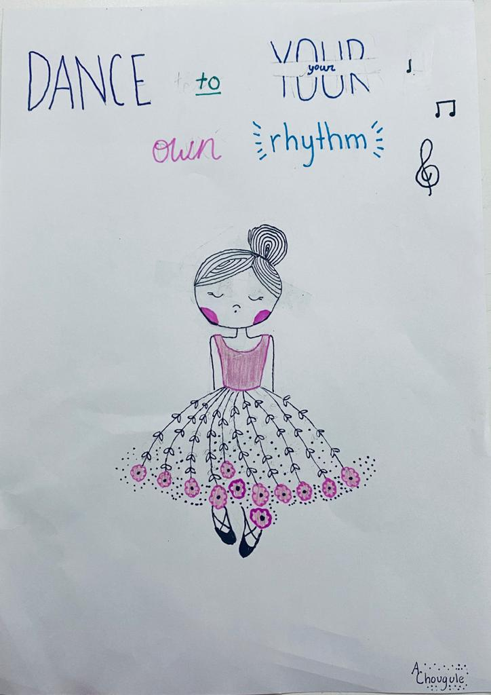
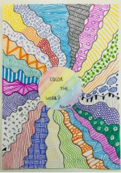

Art is something that I love to do. The varieties of colors and creativity are a great combination for a great drawing. This dancer drawing has a little bit of floral and floral is a thing that I try to include in my art because the flowers make it look very natural to look at.

This sun is colorful and is a main step to making a nice art piece. There are so many designs which are another part of art: creativity.